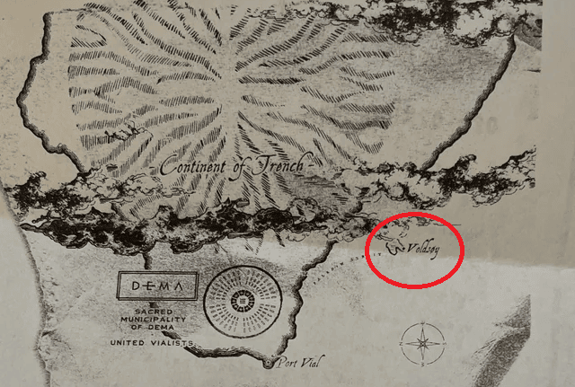
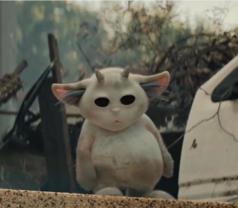
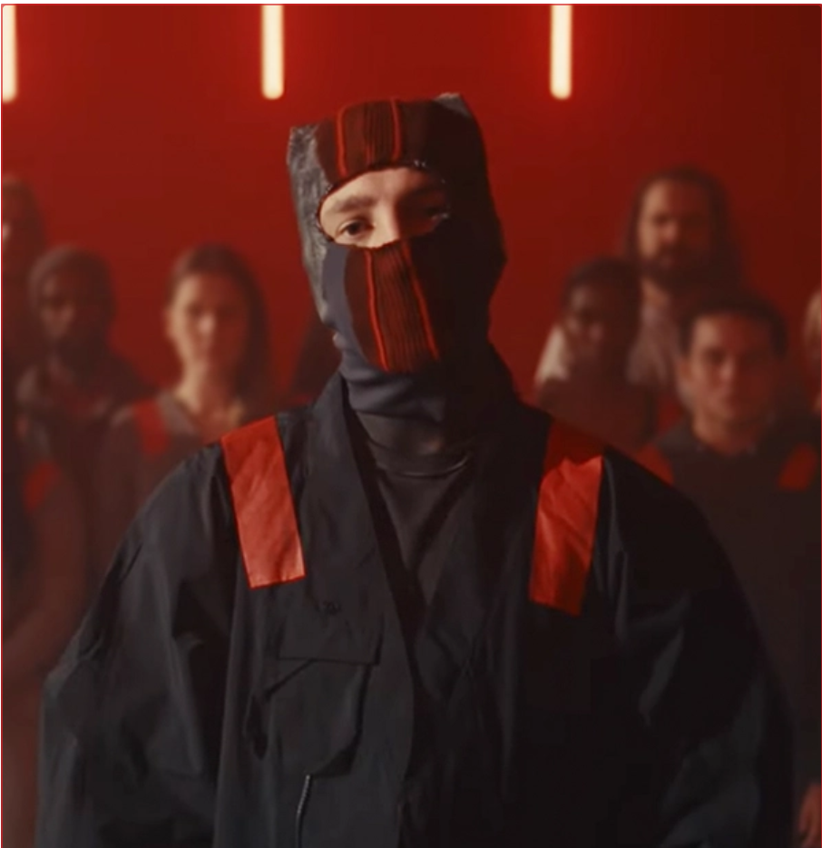

Tema
El cierre de la historia de Dema: la rebelión de Clancy y el Torchbearer.
Descripción
Clancy es el protagonista de la historia que comenzó con Trench. Esta sala reúne cómo termina su recorrido.
Clancy vive trata de escapar de DEMA varias veces. En cada intento, el obispo Nico (o Blurryface), lo encuentra y lo devuelven a la ciudad. Los Banditos, liderados por el Torchbearer (el personaje de Josh), lo ayudan a escapar.
Clancy y el Torchbearer llegan entonces a la isla de Voldsøy, donde unas criaturas 'Neds' le dan el poder de la psicoquinesis.
Ambos regresan a DEMA para enseñar a sus habitantes sobre los Banditos y empieza una rebelión.
Galería



